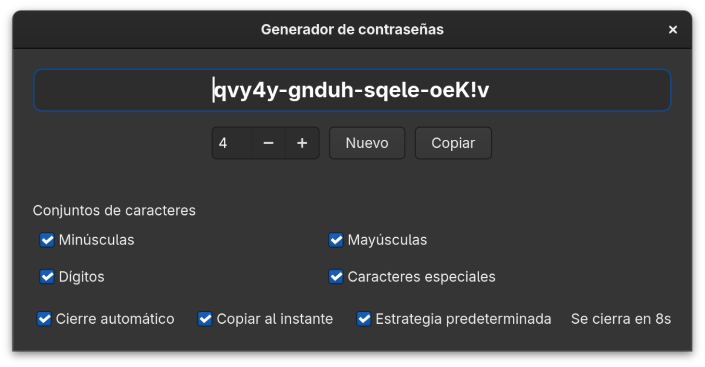
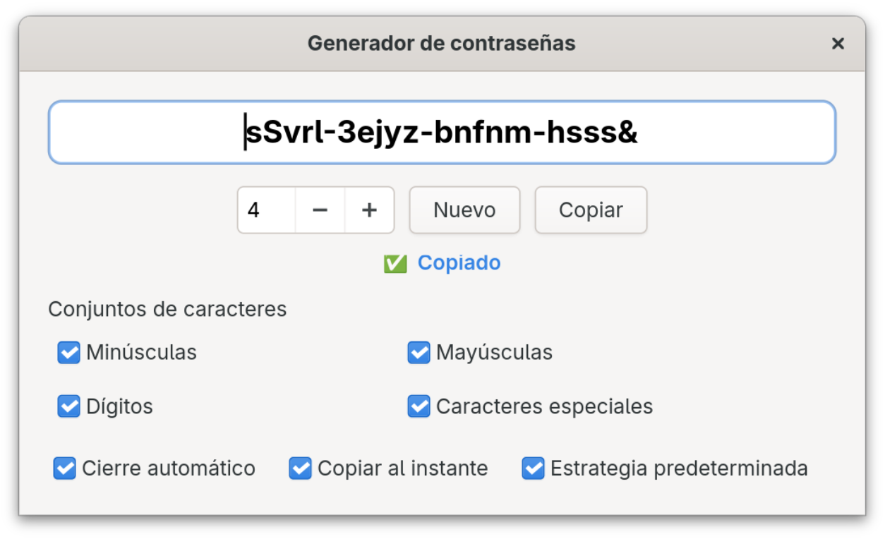

Software libre · GNOME · totalmente sin conexión
Contraseña robusta. Solo tuya.
Generador de contraseñas es una app nativa GTK4 para GNOME. Crea contraseñas criptográficamente robustas directamente en tu ordenador, en grupos de cinco caracteres y a un clic del portapapeles. Sin red. Sin nube. Sin telemetría.
hT4k#-qW9m!-Lp2xZ
Robustez
El valor exacto, una valoración y el tiempo estimado de un ataque de fuerza bruta, con la suposición indicada (10¹² intentos/s, hash rápido), no como reclamo publicitario.
01 Ventajas
Tu contraseña no sale de tu ordenador.
Todo se ejecuta en local, en una app GTK4 empaquetada como Flatpak. No hay ningún servidor que pueda guardar, perder o compartir nada, y no tienes que configurar nada para ello.


100 % sin conexión
Sin acceso a la red, ni en el Flatpak ni en el código. Sin cuentas, sin nube, sin telemetría: sencillamente no hay nada que se pueda perder, robar o vender.
Aleatoriedad criptográfica
Cada carácter procede del generador de números aleatorios del sistema operativo (OsRng), la misma fuente de la que el software de cifrado obtiene sus claves.
Grupos de cinco
abcde-FGHIJ-12345 es más fácil de leer, dictar y teclear que una maraña de caracteres, y la longitud se ve de un vistazo.
Robustez honesta
Entropía exacta, valoración y tiempo estimado de ataque. Se indica la suposición (10¹² intentos/s, hash rápido) y la estrategia predeterminada nunca se presenta como más robusta de lo que es.
Un clic y listo
La contraseña va directa al portapapeles, si quieres ya al iniciar, con una confirmación visible. Después la ventana se cierra sola: la contraseña desaparece de la pantalla, pero se puede seguir pegando.
Se adapta a cualquier política
Minúsculas, mayúsculas, dígitos y caracteres especiales se pueden desactivar por separado. La estrategia predeterminada garantiza al menos una mayúscula, un dígito y un carácter especial.
Ocho idiomas
Español, alemán, francés, inglés, italiano, japonés, sueco y ucraniano: la interfaz sigue el idioma del sistema.
Se integra en el sistema
Claro u oscuro según la configuración del sistema. Intro genera una contraseña nueva, Ctrl+W cierra la ventana, Ctrl+Q sale de la app: no hace falta el ratón.
02 Seguridad
Generada en local, guardada en ninguna parte.
El generador es pequeño a propósito: GTK4 para la interfaz, rand para el azar y algunas bibliotecas de Wayland para el portapapeles. Sin cuentas, sin conexiones externas, sin servicios en segundo plano. Las propiedades clave:
a.Sin red
El Flatpak no solicita --share=network y el código no contiene ningún acceso a la red. Aunque quisiera, el generador no podría enviar nada.
b.Sin registros ni historial
Las contraseñas nunca aparecen en la consola ni en el registro del sistema y nunca se escriben en el disco. Solo se guardan tus preferencias.
c.Poco tiempo en pantalla
Con «Cierre automático», la app se cierra a los 10 segundos; un clic en la ventana detiene la cuenta atrás. La contraseña permanece en el portapapeles hasta que copies otra cosa; si usas un historial del portapapeles, bórrala de allí.
d.Verificable
Código abierto bajo CC BY-SA 4.0: la generación, el cálculo de la entropía y la estimación de la robustez se pueden comprobar en el código y están cubiertos por pruebas.
Contact: https://github.com/danst0/passwordgenerator/security/advisories/new Expires: 2027-10-17T00:00:00.000Z Policy: https://github.com/danst0/passwordgenerator/blob/main/SECURITY.md Preferred-Languages: en, de Canonical: https://passwort.dumke.me/.well-known/security.txt
¿Has encontrado una vulnerabilidad? Infórmala de forma privada a través de GitHub, no como issue público. Normalmente confirmo la recepción en un plazo de 72 horas; los detalles se publican cuando hay una corrección.
03 Instalar
Un solo comando y ya la tienes.
Flathub
La forma recomendada en cualquier distribución Linux: actualmente sobre el runtime de GNOME 50 y actualizada automáticamente con cada versión nueva.
Desde el código fuente
Con Rust y las bibliotecas de desarrollo de GTK4, para quien quiera compilarla o modificarla por su cuenta.
Código fuente en GitHub